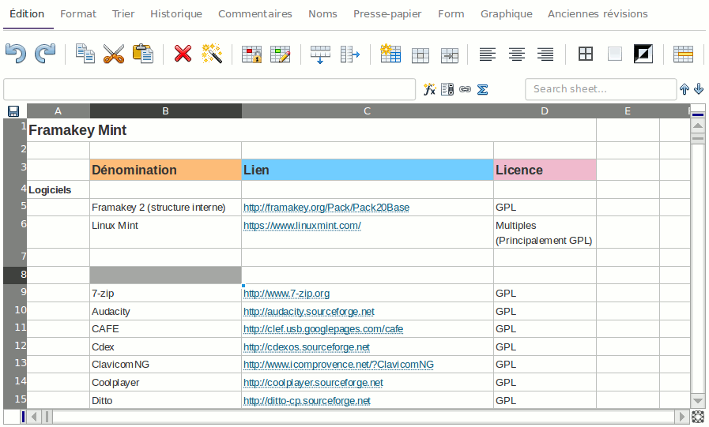

Qu’est ce que Framacalc ?
Un « calc » est un tableur collaboratif en ligne. Vos données sont automatiquement sauvegardées sur internet, et vos amis peuvent collaborer sur le document en même temps. Visualisez tous les changements en temps réel !
Travaillez ensemble sur vos inventaires, vos sondages, vos contenus, vos réunions et bien plus !
Fonctionnalités
- Édition collaborative (plusieurs utilisateurs connectés à la même feuille de calcul peuvent modifier simultanément les cellules)
- Nombreuses fonctions disponibles (statistiques, financières, mathématiques, texte, etc.)
- Possibilité de commenter des cellules
- Sauvegarde permanente et automatique
- Graphiques de base (histogramme, lignes, points)
- Export HTML, CSV
- Taille du document : jusqu’à 100 000 lignes
Les documents Framacalc sont faciles à partager (il suffit d’en communiquer l’adresse), à exporter (en HTML, CSV), sont sauvegardés en permanence et automatiquement, et restent toujours accessibles par internet
Envie d’une démonstration ?
Prise en main
L’interface présente quelques différences par rapport à d’autres tableurs. Elles peuvent être déroutantes.
Si vous avez besoin d’un coup de main, la réponse à vos questions se trouve peut-être là :
Sinon, n’hésitez pas à nous contacter.
Le logiciel
Framacalc repose sur le logiciel libre Ethercalc.
Ethercalc est sous licence CPAL et fait appel à de nombreuses librairies libres.
Cultivez votre jardin
Pour participer au développement du logiciel, proposer des améliorations ou simplement le télécharger, rendez-vous sur le site de développement.